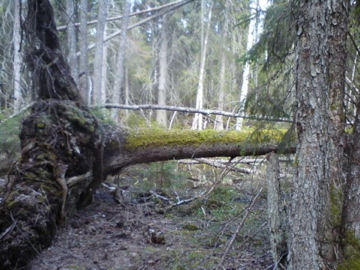

I väster ligger själva storfloran, det stora myrflaket, men även den stora skogsholmen Stenstamon, myrgölen Risö trusk. Norr om sjön ligger Norrberget, Norrbergsån och Skälsjön. I öster har man myrarna Ressaren, Stormossarna och Rödgötan. Skogsholmarna i öster heter Stora- och Lilla Gränön, Björkön, Blåbärsudden, Gammelholmen, Långal och Hagels holme. I söder ligger bla Vika gård.

Gamla härliga uthus vid Vika gård. Foto: Ronny Fredriksson
Vikasjön är lätt att besöka. Kommer du från Dannemora via Films kyrka går det att köra bil hela vägen till den södra stranden om du så vill.
För dig som är lite kyrkointresserad kan det vara värt att ta en liten paus där. Ta en stund av ro genom att gå ett varv runt kyrkan…fundera över namnen på gravstenarna….vilket liv de haft.
Films kyrka på allhelgonaafton 2012. Foto: Ronny Fredriksson
Du kan även gå ner till Filmsjöns norra del som ligger precis öster om åsen som kyrkan ligger på. Här ligger idag även ett nybyggt fågeltorn.
Vid Vika gård kan du givetvis välja om du vill parkera på den iordningställda parkeringen där eller fortsätta genom grindarna genom hagarna fram till sjön. Själv rekommenderar jag att du parkerar vid Vika gård och promenerar genom hagarna förbi den sk ”Risbergstomten” där det finns en iordningställd rastplats med soptunna, dass, bänkar och en vattenbrunn med pump. Efter Risbergstomten kommer en gammal skog med mäktiga aspar och granar. I denna skog hörs ofta spillkråkan och skogsduvan. Nattetid har slagugglan låtit höra sitt dova ropande i denna skog….en värdefull skog. Sedan är du strax framme vid Vikasjön och de gamla fiskestugorna som ligger här. Tyvärr används de inte idag som de gjorde förr. De står där mest som en markering .

Vaksam trana på åker. Foto: Ronny Fredriksson
Trana söker föda på åkrarna. Foto: Ronny Fredriksson
Gammelån med Upplandsledens bro (östra sträckningen av leden). Foto: Ronny Fredriksson
Vinter vid Vikasjön. Foto: Ronny Fredriksson
Rastplatsen vid Staffansholmen. Foto: Ronny Fredriksson
En tältkåta på Staffansholmen vintern 2015. Foto: Ronny Fredriksson

En slaguggla flyger i hyggeskanten. Foto: Ronny Fredriksson
Spången till båtlänningen vid Spetstallen på våren. Foto: Ronny Fredriksson
Orkidén Guckusko kan hittas med lite tur i skogarna öster om Vikasjön. Foto: Ronny Fredriksson
Min mamma, Britt-Marie Fredriksson, med sambon, Lennart Hansson, på spången vid Staffansholmen. Foto: Ronny Fredriksson
Trolsk skymning vid Vikasjön. Foto: Ronny Fredriksson
Min mamma, Britt-Marie Fredriksson, vid vandring från Stormon över de frusna myrarna till Staffansholmen. Foto: Ronny Fredriksson
Dasset vid Risbergstomten. Foto: Ronny Fredriksson
Skymning vid Vikasjön. Foto: Ronny Fredriksson
Bullig snö på Ressaren. Foto: Ronny Fredriksson
Lodjur har gått intill Norrbergskojan. Foto: Ronny Fredriksson
Hasse Vikasjöns is i snöstormen. Foto: Ronny Fredriksson
Peter Brunberg åker skidor på Vikasjön. Foto: Ronny Fredriksson
Blankis på Vikasjön. Foto: Ronny Fredriksson

Del av skogen på Stenstamon. Foto: Ronny Fredriksson
Jag fotograferar utterspår vid Norrberget. Foto: Mikael Karlberg
Isen ligger med ett tunt snötäcke på Risö trusk. Foto: Ronny Fredriksson
Isen smälter på Risö trusk. Foto: Ronny Fredriksson
Vid Risö trusk. Foto: Peter Brunberg
Kamraten Per Dufvenberg packar upp inför grillning vid rastplatsen Staffansholmen på SV sidan om Vikasjön. Foto: Ronny Fredriksson
Tubkikaren uppställd på Träskmossen på norra stranden av Vikasjön. Foto: Ronny Fredriksson